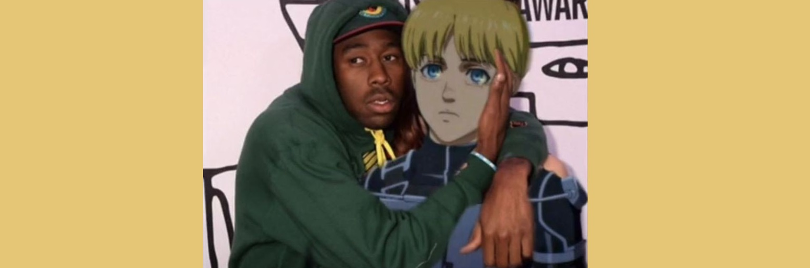
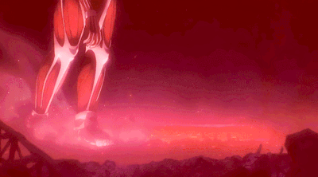

Primera aparición en la cuarta temporada
¡El regreso de Armin en la temporada 4 de Attack on titan! El episodio 66 continúa el caos entre Eren y el titán Martillo de Guerra, y las cosas se vuelven aún más caóticas cuando...
Leer más...

¿Por qué amamos a Armin?
¿Por qué amamos tanto a Armin Arlert? Aquí te dejamos más de 10 razones por las cuales deberías considerar amar a Armin.
Leer más...

Titán colosal
¿Cómo es que Armin heredó el titán colosal? Aquí te dejamos un breve resumen del papel de Armin en la temporada 3.
Leer más...